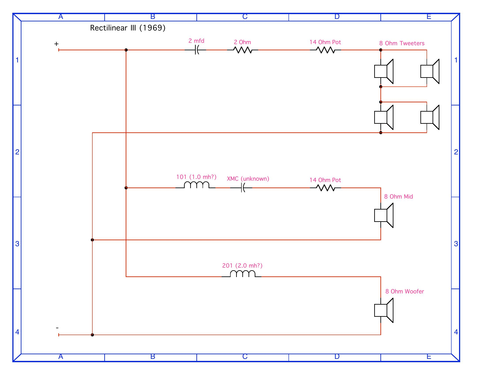

Build Log · Vintage Speaker Restoration
Both cabinets went in for a tweeter-pot repair and full crossover recap. What started as a stuck rheostat turned into a full driver-level diagnosis on both channels, a from-scratch sub-board relocation to work around glued-in crossover boards, and — ultimately — a full 8-tweeter replacement project once testing showed the original Peerless drivers had failed on both sides.
| Position | Reading | Condition |
|---|---|---|
| Super tweeter (2") ×2 | Open | Broken tinsel lead or coil — solder joints confirmed clean, fault is internal to the driver |
| Main tweeter (2.5") | 1.5Ω | Abnormally low — shorted turns / internal winding damage |
| Main tweeter (2.5") | 7Ω | Marginal but passing — used as the reference driver for harness jumper-testing |
Harness fully wired but not yet finalized pending tweeter sourcing. Status: paused.
| Position | Condition |
|---|---|
| Super tweeter (2") ×2 | Both shorted — one measured <1Ω isolated |
| Main tweeter (2.5") ×2 | Both open ("fried") — confirmed once isolated at both ends of the branch, not just the driver side |
Originals identified as Peerless MT-20 (2" super tweeter) and Peerless MT-25 (2.5" main tweeter) — Danish manufacturer, matching the "Made in Denmark" stamp on the original housings, confirmed via a forum thread naming this exact family as used in Rectilinear speakers by name.
f ≈ 1/(2πRC)). Used throughout as the benchmark against each candidate's Fs and recommended minimum crossover.| Part | Ω | Sensitivity | Fs / min. Xover | Cutout | Status |
|---|---|---|---|---|---|
| Visaton TW70-8 (main position) | 8Ω | 90dB | Fs 1500Hz · min. xover 3000Hz | 64mm vs. real 63.5mm hole — near-exact | Leading |
| Visaton TW6NG8 (super position) | 8Ω | 91dB | Fs 1500Hz · min. xover 3000Hz | 56mm vs. real 47.6mm hole — needs enlarging | Leading |
| Vifa / Peerless D19TD05-08 | 8Ω | 87.5dB — closest match to original ~88.5dB | Fs 1687Hz | 70mm — needs enlarging | Alternative |
| Dayton DC28F-8 | 8Ω | 89dB | Fs 834Hz — most headroom | 74mm — needs enlarging | Passed over |
| Ciare HT050-8 | 8Ω | 91dB | Min. xover 3000Hz | 50mm — closest fit, still ~0.1" over the real 1⅞" hole | Passed over |
| Peerless CT-62 | 4Ω only | — | — | Period-correct | Rejected — wrong impedance |
| Goldwood GT-25 | 8Ω | 96dB — far too hot | — | 79mm — far too large | Rejected |
A two-part combo, matching the original design's two-size architecture rather than one uniform driver across all 8 positions. Same manufacturer and product family for both, giving consistent voicing between positions. The TW70's cutout (64mm) is a near-exact match to the measured 63.5mm main-tweeter hole — the best physical fit found for either position across the whole search, likely needing little to no enlargement. The TW6NG still needs some enlargement on the smaller position. Both currently in stock at Parts Express, versus Vifa's back-order.
Genuinely open questions before committing: cone material isn't explicitly stated on either datasheet (same ambiguity that affected other candidates). The two parts use different terminal sizes (4.8mm vs. 2.8mm spades), so different connectors are needed for each. The frequency-response graphs on both datasheets haven't been closely cross-checked against each other or against the originals' likely curve — the numbers above come from the tabulated specs, not a curve-by-curve comparison.
Still a real option — closest sensitivity match to the originals (87.5dB vs. ~88.5dB) and the strongest brand pedigree (Vifa and Peerless are sister Danish companies, now under the same parent group), with real 5-star reviews from owners describing actual vintage-speaker restorations. Downside: larger cutout (70mm) than the Visaton combo needs on either position, and currently back-ordered until 8/21 versus the Visaton parts' in-stock availability.
Sourced from a Classic Speaker Pages forum post ("Rectilinear iii 1969"). Drawn in DesignWorks Lite, dated December 2006. This appears to be the only documentation of this network's actual topology to surface publicly — the same speaker has an active, unanswered "does anyone have the schematic" thread on Audio Asylum dating back to 2004.
